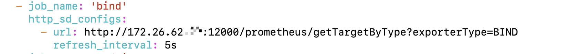

bind-exporter的部署
安装部署exporter
下载exporter二进制包
根据不同的环境，选择不同的二进制包
下载地址：https://github.com/prometheus-community/bind_exporter/releases/tag/v0.5.0
我这里使用的是这个包【bind_exporter-0.5.0.linux-amd64.tar.gz】
解压安装包
1 | tar -zxvf bind_exporter-0.5.0.linux-amd64.tar.gz |

解压之后的目录结构如下：

运行exporter
进入解压的目录，运行二进制文件 bind_exporter
1 | ./bind_exporter --bind.pid-file=/var/run/named/named.pid --bind.timeout=20s --web.listen-address=0.0.0.0:9119 --web.telemetry-path=/metrics --bind.stats-url=http://localhost:53/ --bind.stats-groups=server,view,tasks |
注意：
① 其中的localhost，是指被监控的bind所在的服务器地址，我这里是本机，因此可以直接使用localhost替代
启动结果如下：

对接prometheus
我这里采用的http_sd_config的方式发现服务，需要了解的可以查阅《prometheus服务动态发现之http_sd_config》这篇文章
在prometheus中添加如下配置：
1
2
3
4- job_name: 'bind'
http_sd_configs:
- url: http://172.26.62.xx:12000/prometheus/getTargetByType?exporterType=BIND
refresh_interval: 5s

- 重启或reload一下prometheus即可
注意：
① 配置中的url填写的是自己提供的服务地址，prometheus会自动调用该接口获取服务节点信息，该接口返回的的结果如下：
2
3
4
5
6
7
8
9
10
{
"targets":[
"172.18.40.xx:9119"
],
"labels":{
"job":"bind"
}
}
]
- 查看节点是否注册上去
使用grafana查看监控大盘
这里使用的是1666的监控大盘，访问地址如下：
https://grafana.com/grafana/dashboards/1666

最终呈现的监控大盘如下：
bind_exporter监控的指标
通过访问exporter暴露出来的指标访问地址，可以查看到当前采集监控数据：
http://172.18.40.88:9119/metrics
1 |
问题分析
在部署的的过程中出现了如下的问题：
Couldn’t retrieve BIND stats
问题说明：
bind_exporter启动后，无法成功访问bind，从而导致无法获取监控数据

解决办法：
参考网址如下：
https://github.com/prometheus-community/bind_exporter/issues/118
https://github.com/prometheus-community/bind_exporter/issues/69
分析结论是：
这个问题是bind与bind_exporter的版本问题导致的，目前暂时只适用于 bind 9.17.20 和 bind_exporter 0.5.0
最终解决问题的操作如下：
我当前版本为暂时没有切换bind的版本，没有验证该结果

本博客所有文章除特别声明外，均采用 CC BY-SA 4.0 协议 ，转载请注明出处！